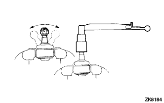
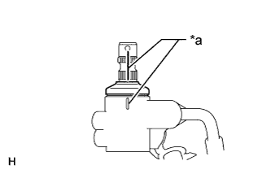
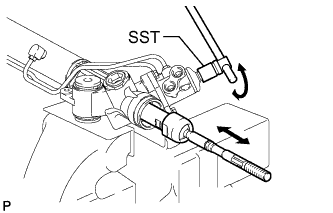
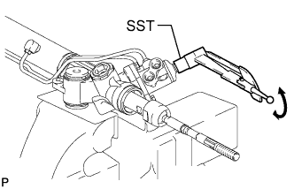

STEERING GEAR > INSPECTION |
| 1. INSPECT TIE ROD END SUB-ASSEMBLY |
|  |
Install the nut.
Flip the ball joint stud back and forth 5 times as shown in the illustration.
Using a torque wrench, turn the nut continuously at a rate of 3 to 5 seconds per turn and check the torque reading on the 5th turn.
| 2. INSPECT TOTAL PRELOAD |
|  |
Place matchmarks as shown in the illustration.
| *a | Matchmark |
Temporarily install the 2 steering rack ends to the steering rack.
|  |
Using SST, fully turn the steering rack right and left 10 times to settle it.
|  |
Using SST, turn the control valve and measure the preload.
After inspecting the preload, align the matchmarks.